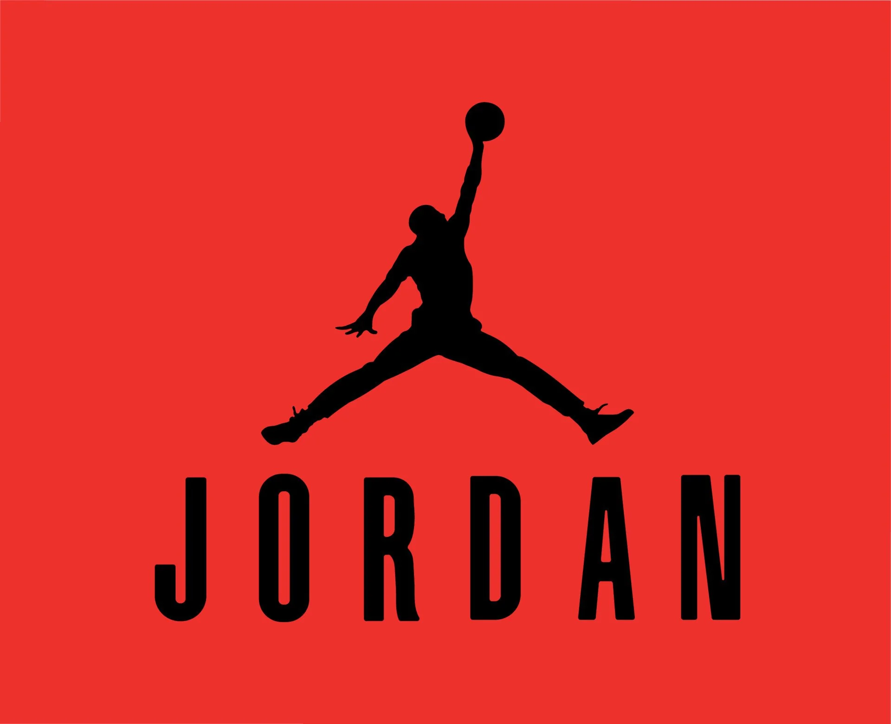

About Jordan
It was officially launched on September 9, 1997, following the immense success of the original Air Jordan sneakers, which first debuted in 1984 and were released to the public in 1985.
The brand was founded by Michael Jordan in collaboration with Nike’s designer Peter Moore, who helped design the first Air Jordan shoe.
Jordan Brand quickly became one of the most iconic names in sports and street fashion. Its logo, known as the “Jumpman”, symbolizes excellence, style, and performance. Today, Jordan Brand produces not only basketball shoes but also apparel and accessories, remaining a cultural symbol that bridges sports and lifestyle around the world.